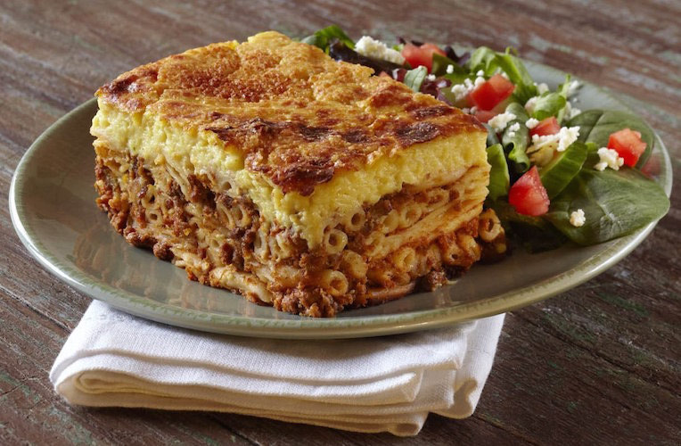

Pastichio Recipe

What is Pastichio?
Pastichio is a delicious Greek dish that is similar to lasagna.
The dish is pronounced Pah-Stee-Tsi-Oh. Pastichio is a popular
winter dish in Greece and can be found in most restaurants around Greece.
Pastichio is mainly composed of noodles, ground beef, and a thick cream on top.
Ingredients
For The Meat Sauce:
- 2.4 pounds minced beef
- 3 tablespoons olive oil
- 1 large onion, finely chopped
- carrot, grated
- 2 bay leaves
- 1 cinnamon stick
- 1/2 teaspoon ground allspice
- 1/4 teaspoon ground cloves
- 1 cup fry wine (red or rose)
- 1/4 cup thick tomato paste
- 2 cups pureed tomatoes
- 1 teaspoon sugar
- Salt and pepper to taste
For The Pasta:
- 1 pound pastichio pasta
- 1 1/2 cups grated cheese (cheddar,Parmigiano Reggiano,Greek Kefalotiri)
- 2 teaspoons fine salt
For The Bechamel Sauce:
- 1 cup all purpose flour
- 1/2 cup olive oil
- Frechly ground nutmeg (1/3 of nutmeg seed)
- 1/2 teaspoon ground cinnamon
- 1 1/2 teaspoons fine salt
- 6 cups warm milk
- 2 eggs
- 1 1/2 cups grated cheese (cheddar,Parmigiano Reggiano,Greek Kefalotiri)
Instructions
- Make the meat sauce: Heat a deep pan over high heat and add the
oil and the minced beef. Let it brown, without stirring, and when the meat is no
longer red, stir with a wooden spatula and break any meat lumps. Cook until
all the juices have evaporated, reduce heat to medium/high and add the onion
the carrot, the bay leaves, the cinnamon stick, the allspice and the cloves.
Stir for 5 minutes and add the wine. Wait for 1 minute for the alcohol to
evaporate and add the tomato paste, the pureed tomatoes, the sugar, the salt
and the pepper. When it starts to boil again, reduce heat to low and simmer
until almost all of the liquids have evaporated (about 30 minutes). Remove
and discard the bay leaves and the cinnamon stick.
- In the meantime, make the pasta: Cook the pasta in a pot with
salted water, until al dente, according to the packaging directions.
- Drain the pasta well, mix in the grated cheese and transfer about two-thirds
of the pasta to the casserole dish. Level with a spoon and cover with the meat
sauce. Level the meat sauce with the back of a spoon and spread the rest of the
pasta uniformly over the meat.
- Preheat your oven to 374F (190C)
- Make the bechamel sauce: Cook the flour with the oil in a large
pot stirring continuously with a whisk until it starts to smell nutty. Remove
from the heat and add the cinnamon, the nutmeg, and the salt. Whisk to combine and
add the warm milk gradually, whisking constantly to prevent it from forming any
lumps. At first it will thicken, but as you continue to add the milk it will loosen
up. When all the milk is added, return to the stove and cook over medium heat,
whisking constantly, until it thickens. When it starts to bubble, remove from the
heat and let it sit on your counter for 5 minutes to cool a little. Add 1 cup of
the grated cheese and the eggs and whisk quickly to combine.
- Pour the béchamel sauce over the pasta, level with a spatula and sprinkle the
surface with the remaining grated cheese.
- Bake for 50-60 minutes or until the top is golden brown with dark spots all over
the surface. Let it rest for 20-30 minutes before slicing for easier serving. Eat!